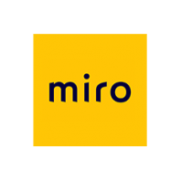
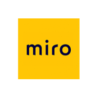

¿Quién soy?
Mi nombre es Noelia Casado.
Soy maquetadora web y diseñadora UX/UI con 15 años de experiencia en el sector digital. He desarrollado proyectos de gran envergadura como las webs muyinteresante.es o serpadres.es. Habituada a trabajar con equipos multidisciplinares realizando labores tanto de maquetación como diseño publicitario. Proyectos bajo diferentes tecnologías como joomla, wordpress, frameworks Symfony y Bootstrap.
Formación en User Experience Design en el bootcamp de Ironhack para ampliar mi perfil en el área de diseño.
Preocupada por el pixel y el responsive, aplicando siempre el mobile first.
+34 620660490
Descargar currículo
Mis skills
 

¿Qué dicen de mi?
Resuelta, intuitiva, metódica
Trabajé con Noelia durante casi doce años en Zinet Media. En una primera etapa, desde distintos departamentos (diseño/maquetación-desarrollo web) y finalmente bajo mi supervisión, como responsable final del área de maquetación del departamento de desarrollo digital que yo lideraba. Es una mujer resuelta, intuitiva, metódica y sobre todo muy rápida. Se mueve cómodamente en proyectos técnicos de gran envergadura y está acostumbrada a trabajar bajo presión. Fiel a los plazos establecidos, siempre cumplía con las entregas. Capaz de resolver nuevas dificultades con destreza. Con un largo recorrido en proyectos frontend de distinta índole y acostumbrada a trabajar codo con codo con equipos técnicos, su incorporación a cualquier proyecto será muy productiva.
Covadonga Carrasco